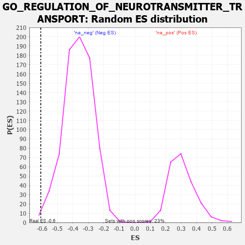

| | | Dataset | 7d |
| Phenotype | NoPhenotypeAvailable |
| Upregulated in class | na_neg |
| GeneSet | GO_REGULATION_OF_NEUROTRANSMITTER_TRANSPORT |
| Enrichment Score (ES) | -0.60859215 |
| Normalized Enrichment Score (NES) | -1.6649297 |
| Nominal p-value | 0.0064683054 |
| FDR q-value | 0.05410731 |
| FWER p-Value | 0.992 |
Table: GSEA Results Summary
 Fig 1: Enrichment plot: GO_REGULATION_OF_NEUROTRANSMITTER_TRANSPORT
Fig 1: Enrichment plot: GO_REGULATION_OF_NEUROTRANSMITTER_TRANSPORT
Profile of the Running ES Score & Positions of GeneSet Members on the Rank Ordered List
| PROBE | GENE SYMBOL | GENE_TITLE | RANK IN GENE LIST | RANK METRIC SCORE | RUNNING ES | CORE ENRICHMENT | | 1 | MEF2C | | | 1054 | 0.473 | -0.1087 | No |
| 2 | P2RY1 | | | 1416 | 0.407 | -0.1336 | No |
| 3 | BACE1 | | | 1673 | 0.360 | -0.1475 | No |
| 4 | FMR1 | | | 1816 | 0.334 | -0.1485 | No |
| 5 | CDK5 | | | 3480 | 0.080 | -0.3539 | No |
| 6 | NF1 | | | 3713 | 0.040 | -0.3810 | No |
| 7 | SYT11 | | | 3732 | 0.036 | -0.3815 | No |
| 8 | HTR1B | | | 3745 | 0.035 | -0.3812 | No |
| 9 | TOR1A | | | 4030 | -0.013 | -0.4163 | No |
| 10 | SYT12 | | | 4172 | -0.037 | -0.4322 | No |
| 11 | LRRK2 | | | 4467 | -0.087 | -0.4648 | No |
| 12 | SYT4 | | | 4590 | -0.116 | -0.4743 | No |
| 13 | PNKD | | | 4591 | -0.116 | -0.4684 | No |
| 14 | RAP1B | | | 4706 | -0.140 | -0.4756 | No |
| 15 | DRD2 | | | 5088 | -0.221 | -0.5124 | No |
| 16 | RIMS2 | | | 5272 | -0.265 | -0.5220 | No |
| 17 | KCNC4 | | | 5414 | -0.298 | -0.5246 | No |
| 18 | DGKI | | | 5725 | -0.384 | -0.5442 | No |
| 19 | SYT9 | | | 5992 | -0.469 | -0.5539 | No |
| 20 | FLOT1 | | | 6276 | -0.564 | -0.5610 | No |
| 21 | RAB5A | | | 6655 | -0.741 | -0.5710 | Yes |
| 22 | VPS18 | | | 6659 | -0.743 | -0.5337 | Yes |
| 23 | CPLX1 | | | 6684 | -0.753 | -0.4985 | Yes |
| 24 | GSK3B | | | 6719 | -0.768 | -0.4638 | Yes |
| 25 | GIPC1 | | | 6819 | -0.826 | -0.4344 | Yes |
| 26 | DNM1L | | | 6963 | -0.913 | -0.4061 | Yes |
| 27 | SYT1 | | | 7148 | -1.033 | -0.3769 | Yes |
| 28 | KMO | | | 7432 | -1.308 | -0.3463 | Yes |
| 29 | ADCY1 | | | 7695 | -1.752 | -0.2905 | Yes |
| 30 | ASIC1 | | | 7726 | -1.838 | -0.2011 | Yes |
| 31 | GRIK5 | | | 7792 | -2.044 | -0.1056 | Yes |
| 32 | CALM3 | | | 7869 | -2.525 | 0.0128 | Yes |
Table: GSEA details [plain text format]

Fig 2: GO_REGULATION_OF_NEUROTRANSMITTER_TRANSPORT: Random ES distribution
Gene set null distribution of ES for GO_REGULATION_OF_NEUROTRANSMITTER_TRANSPORT